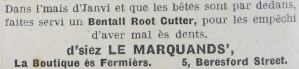
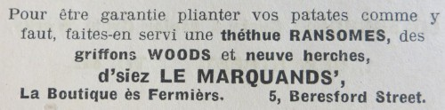
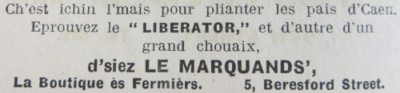
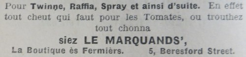
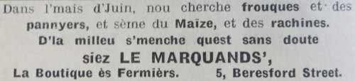
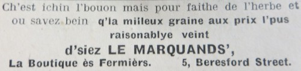
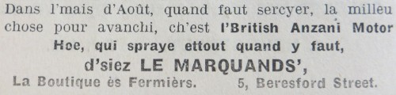
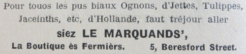
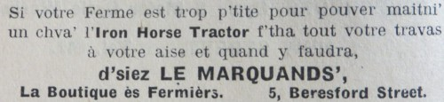
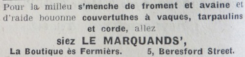

|

Dans l'mais d'Janvi et que les bêtes sont par dedans, faites servi un Bentall Root Cutter, pour les empêchi d'aver mal ès dents,
La Boutique ès Fermiers. 5, Beresford Street.  Pour être garantie plianter vos patates comme y faut, faites-en servi une thethue Ransome, des griffons Woods, et neuve herches,
La Boutique ès Fermiers. 5, Beresford Street.  Ch'est ichin l'mais pour plianter les pais d'Caen. Eprouvez le "Liberator" et d'autre d'un grand chouaix,
La Boutique ès Fermiers. 5, Beresford Street.
Dans l'mais d'Avri, nou sème toute les p'tite graines. Les raves ettout. Pour aver d'tchi bé. Toute d'la graine garantie, l'pris l'pus raisonnnablye,
La Boutique ès Fermiers. 5, Beresford Street.  Pour Twinne, Raffia, Spray et ainsi d'suite. En effet tout cheut qui faut pour les Tomates, ou trouthez tout chonna
La Boutique ès Fermiers. 5, Beresford Street.  Dans l'mais d'Juin, nous cherche frouques et des pannyers, et seme du Maize, et des rachines. D'la milleu s'menche quest sans doute
La Boutique ès Fermiers. 5, Beresford Street.  Ch'est ichin l'bouon mais pour faithe de l'herbe et ou savez bein q'la milleux graines aux prix l'pus raisonnablye veint
La Boutique ès Fermiers. 5, Beresford Street.  Dans l'mais d'Août, quand faut sercyer, la milieu chose pour avanchi, ch'est l'British Anzani Motor Hoe, qui spraye ettout quant y faut,
La Boutique ès Fermiers. 5, Beresford Street.
Dans l'mais d'Septembre ou autchun temps, s'ou sprayez avec Perenox ou êtes garantis pus ou... mains contre la maladie,
La Boutique ès Fermiers. 5, Beresford Street.  Pour touos les pus bieaux Ognons, d'Jettes, Tulippes, Jaceinths, etc., d'Hollande, faut tréjour aller
La Boutique ès Fermiers. 5, Beresford Street.  Si votre Ferme est trop p'tite pour pouver maintni' un ch'va l'Iron Horse Tractor f'tha tout votre travas à votre aise et quand y faudra,
La Boutique ès Fermiers. 5, Beresford Street.  Pour la milleu s'menche de froment et avaine et d'raide bouonne couvetuthes à vaques, tarpaulins et corde, allez
La Boutique ès Fermiers. 5, Beresford Street. |
Almonas des Chroniques de Jersey 1949

|
Dans l'mais d'Janvi et que les bêtes sont par dedans, faites servi un Bentall Root Cutter, pour les empêchi d'aver mal ès dents,
La Boutique ès Fermiers. 5, Beresford Street.
Dans l'mais d'Févri nou pense à la pliantie. J'avons des tchethues Ransomes, griffons Woods, neuves herches, rolleurs et s'meuses à guano,
La Boutique ès Fermiers. 5, Beresford Street.
Ch'est ichin l'mais pour plianter les pais d'Caen. Eprouvez le "Liberator" et d'autre d'un grand chouaix,
La Boutique ès Fermiers. 5, Beresford Street.
Dans l'mais d'Avri, Nou sème toute les p'tite graines. Les raves ettout. Pour aver d'tchi bé. Toute d'la graine garantie, l'pris l'pus raisonnnablye,
La Boutique ès Fermiers. 5, Beresford Street.
J'avons des frouques à patates, panniers et du maize pour s'mer,
La Boutique ès Fermiers. 5, Beresford Street.
Pour la milleu graine de raves, navets, swedishes et toute autre p'tite graine,
La Boutique ès Fermiers. 5, Beresford Street.
Notr' s'menche d'herbe et r'connue comme la millyeuthe dans toute parti d'lile. Que j'sais pour fain ou pour pastuthe,
La Boutique ès Fermiers. 5, Beresford Street.
Dans l'mais d'Août, quand faut sercyer, la millieu chose pour avanchi, ch'est l'British Anzani Motor Hoe, qui spraye ettout quant y faut,
La Boutique ès Fermiers. 5, Beresford Street.
Dans l'mais d'Septembre ou autchun temps s'ou sprayez avec Perenox ou êtes garantis pus ou mains contre la maladie,
La Boutique ès Fermiers. 5, Beresford Street.
Pour touos les pus bieaux Ognons, d'Cjettes, Tulippes, Jaceinths, etc., d'Hollande, faut tréjous aller
La Boutique ès Fermiers. 5, Beresford Street.
Pour un pus grand chouaix d'outils de ferme, Chethues à bris, twin, s'meuses à guano, tracteurs légers, clippeuse à chéveaux, etc.,
La Boutique ès Fermiers. 5, Beresford Street.
Pour la milleu s'menche d feroment et avaine et d'raide bouonne couvetuthes à vaques, tarpaulins et corde,
siez Le Marquands' |
Almonas des Chroniques de Jersey 1954
Viyiz étout: